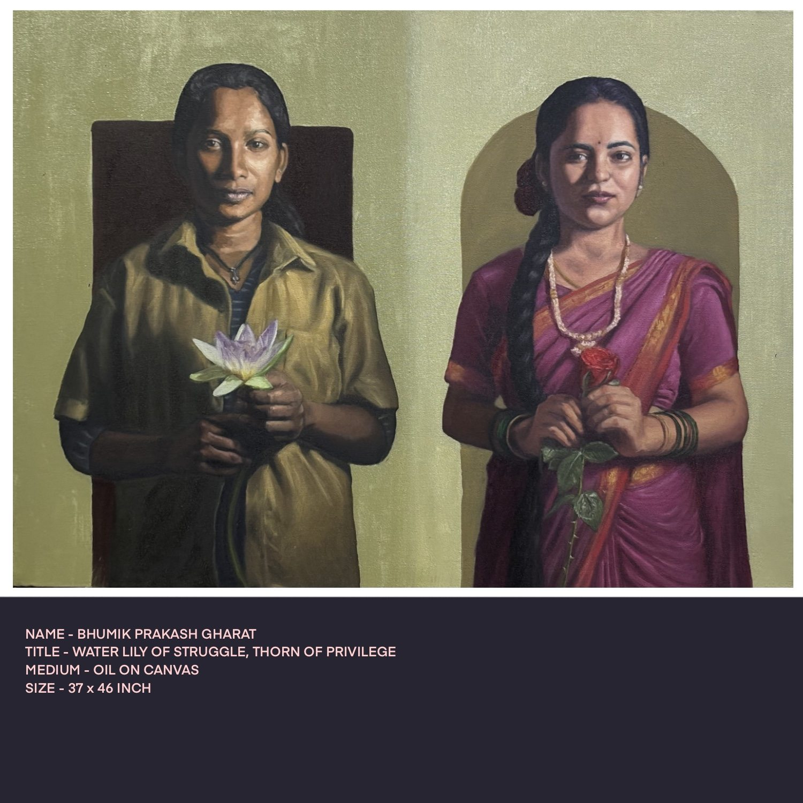
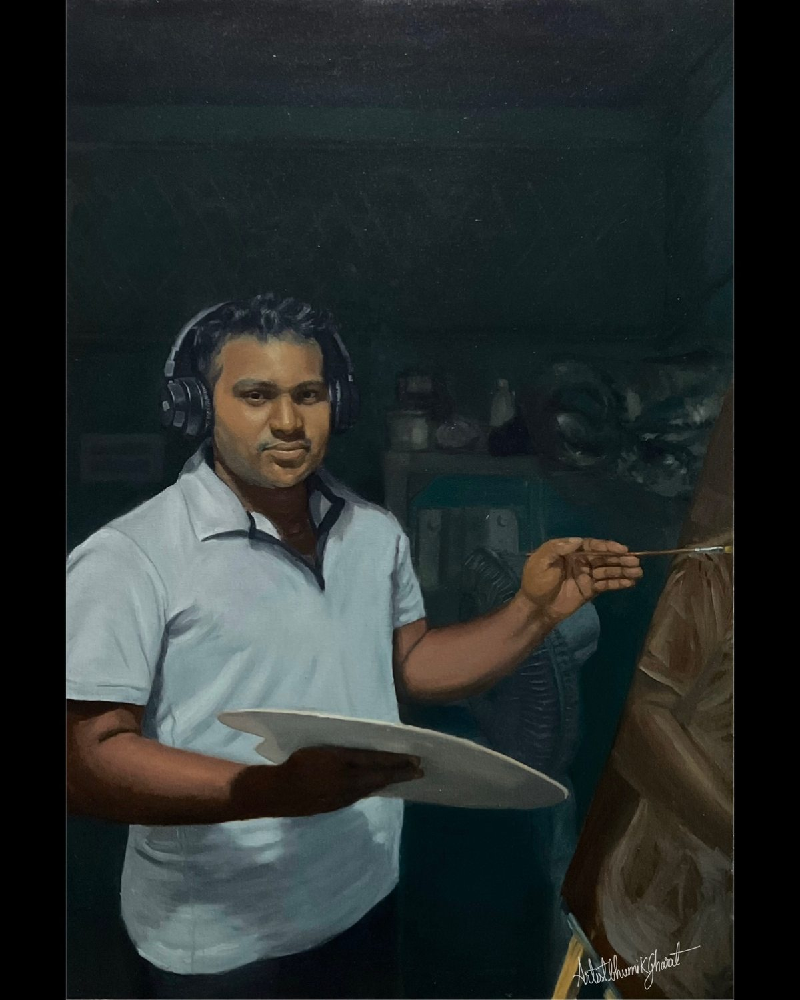
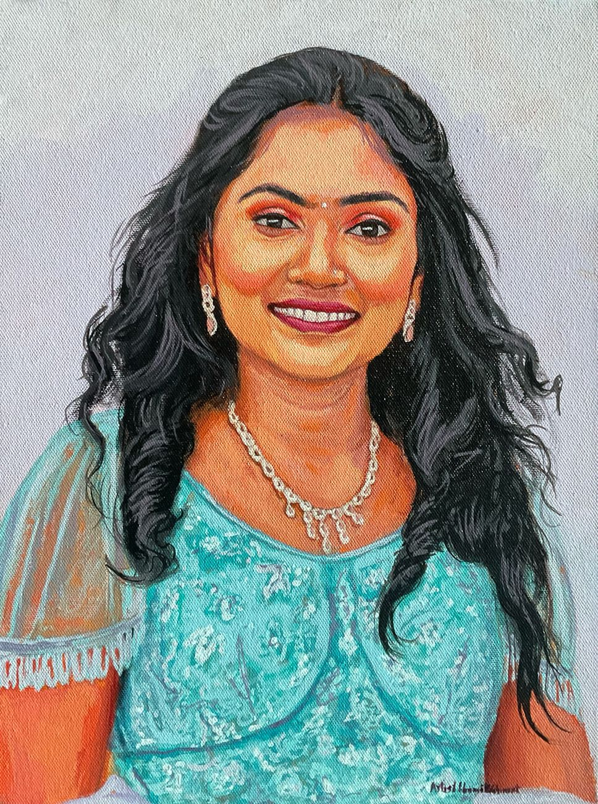

Beyond
the Canvas.
Human stories. Unspoken emotions. A world of realism, light and the lives we live.

Two lives.
Two realities.
Water Lily of Struggle, Thorn of Privilege · Oil on canvas · 37 × 46 in
Through the contrast of a water lily and a rose, this painting reflects on the distance between hardship and privilege, and the humanity shared across both.
Acquired by a private collector in 2026.
The portfolio
Original works from the uploaded artwork collection. Browse paintings, life drawings, commissioned portraits and exhibition views.
Art that begins with observation.
Bhumik Prakash Gharat is a fine artist from Vasai, Maharashtra, pursuing G.D. Art (Drawing & Painting) at Vasai Vikasini College of Visual Arts. His practice is rooted in realism and inspired by everyday life, human emotions and social observation.
Through expressive light, composition and symbolism, he creates paintings that invite reflection and emotional connection. His work spans oil and acrylic painting, portraiture, drawing from life and commissioned artworks.
Alongside his studio practice, Bhumik has mentored students in university-level fine arts competitions and served as a fine arts judge.
Connect with Bhumik ↗
Beyond the studio
Selected group exhibitions, institutional showcases and international presentations from the artist's portfolio.
134th All India Annual Art Exhibition
The Bombay Art Society · Jehangir Art Gallery, Kala Ghoda, Mumbai
All India Young Artists Exhibition
Rajasthan International Centre · Jaipur
Portrait International Online Group Exhibition, Vol. 2
No. 35 Gallery · London, UK · Selected artist
63rd Maharashtra State Art Exhibition
Balasaheb Thackeray Kaladalan · Thane
Antarang Kala Mahotsav
Dr. M. G. Parulekar Mitramandal's School · Vasai
Awards & achievements
Best Drawing from Life of the Year
Vasai Vikasini College of Visual Arts
Best Drawing from Life of the Year
Vasai Vikasini College of Visual Arts
Best Printmaking of the Year
Vasai Vikasini College of Visual Arts
Second Prize · Installation Art
University Youth Festival
Consolation Prize · Cartooning
University Youth Festival
Overall Fine Arts Trophy
University Youth Festival · Vartak College team, with Bhumik serving as Assistant Art Director

Commission an original.
From personal portraits to expressive figurative paintings, commission an original artwork created with attention to likeness, emotion and craft.
Pricing depends on size, medium, complexity and framing. Availability is confirmed individually.
Enquire about a commission ↗Let's create a conversation.
For exhibitions, collaborations, commissions, acquisitions or general enquiries.
bhumikgharat@gmail.com+91 74985 45976Instagram @bhumik_the_beginner ↗
Based in Vasai, Maharashtra, India.